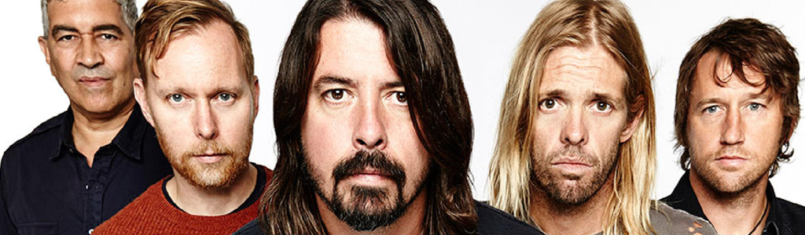

Biografía
Foo Fighters es una banda de rock estadounidense formada en la ciudad de Seattle en 1994 por Dave Grohl, exbaterista de Nirvana y Scream. El grupo debe su nombre a los ovnis y los diversos fenómenos aéreos que fueron reportados por los pilotos de los aviones aliados en la Segunda Guerra Mundial, que se conocen colectivamente como Foo Fighters. Antes del lanzamiento de su álbum debut en 1995, Grohl, como único miembro oficial, reclutó al bajista Nate Mendel y el baterista William Goldsmith, ambos anteriormente miembros de Sunny Day Real Estate, así como su compañero en las giras de Nirvana, Pat Smear como guitarrista para completar la alineación. La banda comenzó con actuaciones en Portland, Oregón. Goldsmith renunció durante la grabación del segundo álbum del grupo, The Colour and the Shape (1997), cuando la mayoría de las partes de batería fueron re-grabadas por el propio Grohl, hasta que luego se unió Taylor Hawkins como baterista. La partida de Smear siguió poco después. Fue reemplazado por Franz Stahl, respectivamente, aunque fue despedido antes de la grabación del tercer álbum del grupo, There Is Nothing Left to Lose (1999). La banda continuó brevemente como trío hasta que Chris Shiflett se unió como guitarrista principal de la banda después de la finalización de There Is Nothing Left to Lose. La banda lanzó su cuarto álbum, One by One, en 2002. El grupo siguió esa versión con la de dos discos In Your Honor (2005), que se divide entre canciones acústicas y material más pesado. Pat Smear volvió a la banda en ese mismo año, y se sumó el tecladista Rami Jaffee.
